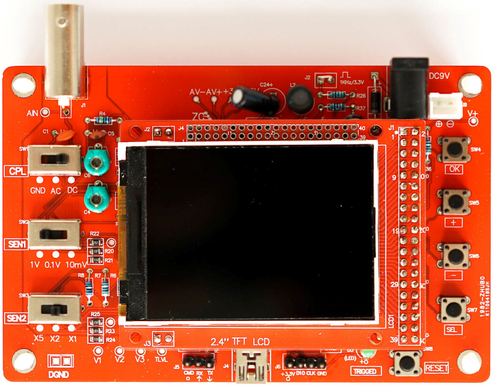
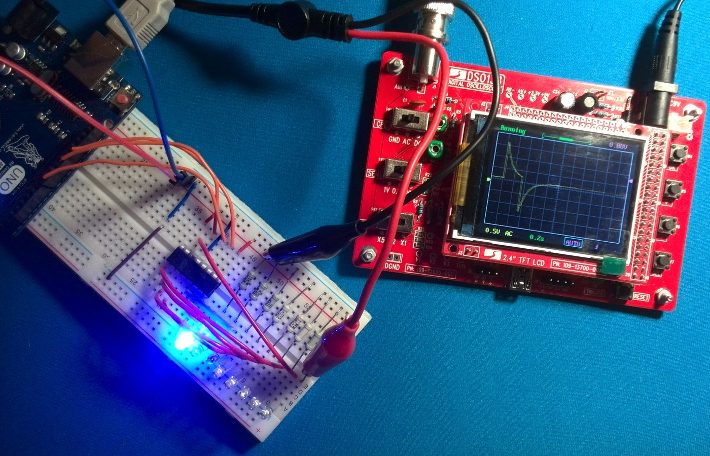
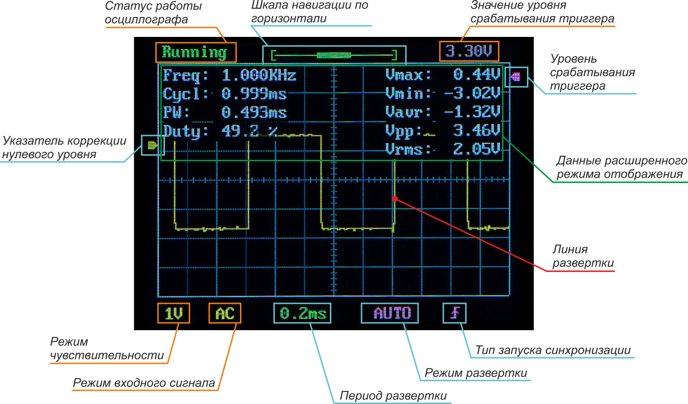
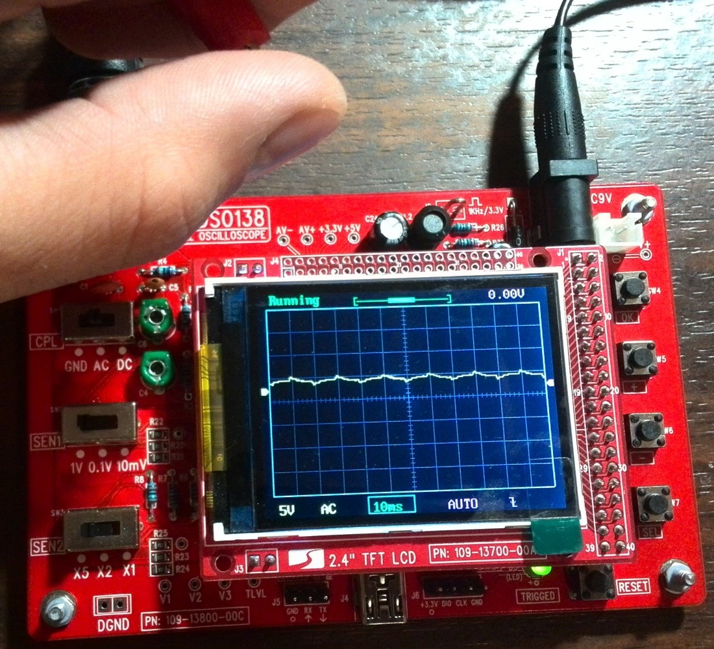
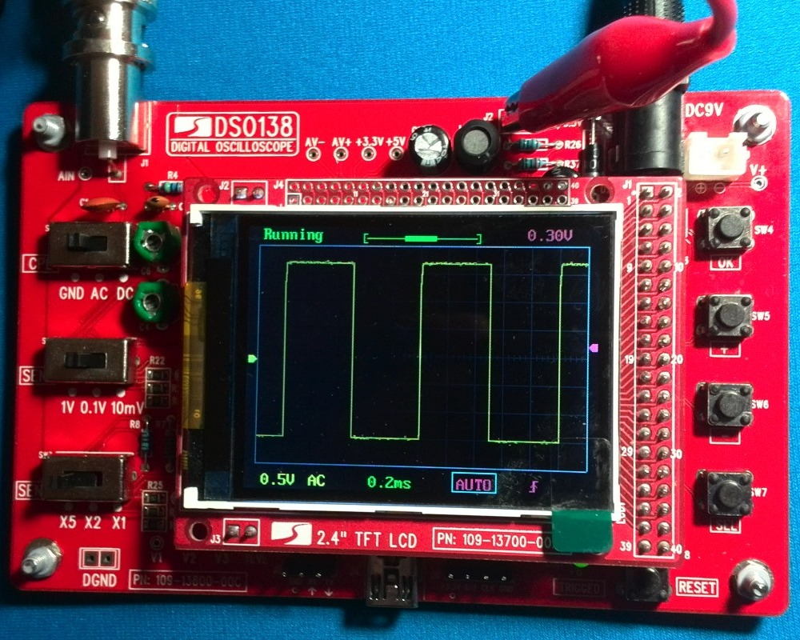
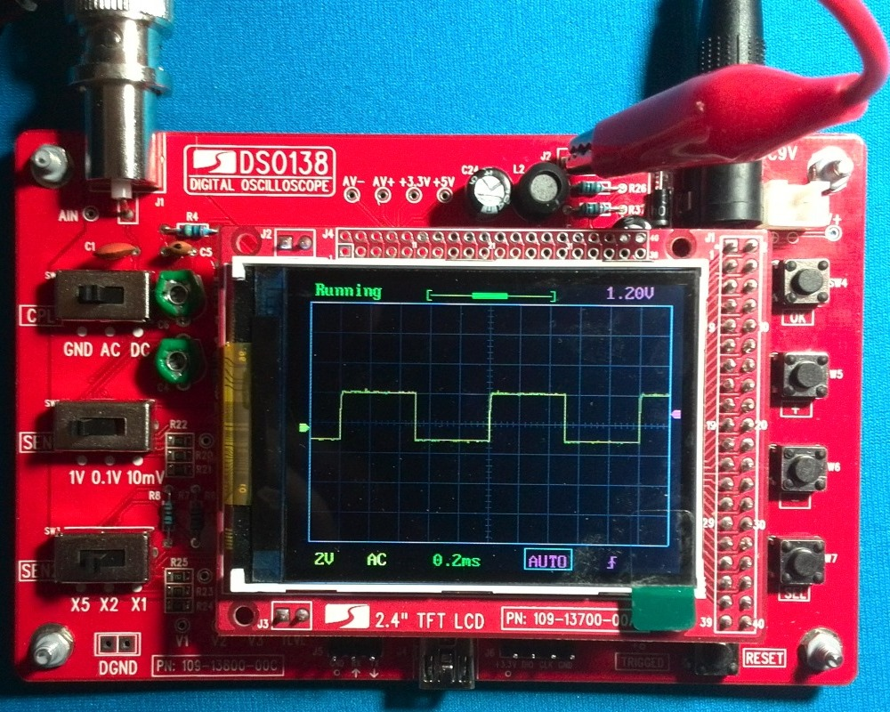
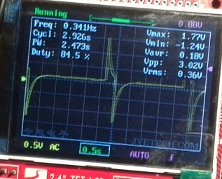

Осциллограф DSO 138
Осциллограф — это глаза радиолюбителя. С его помощью можно наблюдать изменение напряжения в определенной точке схемы во времени в графическом виде. Несмотря на простоту и средние характеристики, соотношение цена/качество позволяет начинающим электронщикам использовать осцилограф DSO 138 в своей практике.

Рис. 1 - Внешний вид осциллографа DSO138
{kind=link}

Рис. 2 - Осциллограф DSO138 в работе
Основной и главной характеристикой любого осциллографа является его частота — величина, показывающая какой количество замеров прибор производит в единицу времени. Отсюда главный недостаток осциллографа DSO138 — низкая частота — 200 KГц.
Следующей существенной характеристикой любого осциллографа является количество каналов. Наличие нескольких каналов позволяет осуществлять «связанные» наблюдения, в этом случае показывая одновременно изменения напряжений в нескольких точках, осциллограф помогает их сравнивать и выявлять закономерности. У осциллографа DSO 138 всего 1 канал.
Развертка — это линия, которой осциллограф рисует уровень измеряемого напряжения. Для того, чтобы периодические колебания (например, синусоида переменного тока) отображались корректно (неподвижно по горизонтали) существует понятие синхронизации развертки (триггер, защелка). Как правило, в осциллографах предусмотрена возможность изменения двух параметров схемы синхронизации — уровень запуска и его тип (по спаду и по фронту).
Выделяют также 3 режима развертки — автоматический, ждущий и однократный. Цифровые осциллографы имеют неоспоримое преимущество перед аналоговыми в том, что в них реализована возможность использования всех 3 режимов развертки, а в аналоговых — только автоматический. Это ограничение связано с конструктивной невозможностью работы в других режимах.
Для осциллографа DSO138 максимально допустимое входное напряжение со штатным щупом (без делителя) — 50 В. При превышении данного значения очень вероятен выход прибора из строя.
Таблица 1
| Параметр | Значение |
|---|---|
| Количество выборок | 1 млн./сек |
| Полоса пропускания | 0…200 кГц |
| Диапазон чувствительности | 10 мВ/дел.…5 В/дел. |
| Макс. входное напряжение | 50 В |
| Входное сопротивление | 1 МОм / 20 пФ |
| Разрешение | 12 бит |
| Длина записи | 1024 точки |
| Шкала по времени | 500 сек/дел.…10 мксек/дел. |
| Питание | 9 В (8…12 В) |
| Потребление | ~120 мА |
| Размеры | 117×76×15 мм |
| Вес | 70 г без пробника |
Органы управления осциллографа DSO138
Осциллограф DSO138 имеет 3 переключателя режимов работы (слева) и 5 кнопок (справа).
Переключатель CPL отвечает за установку типа входного напряжения:
- GND — вход осциллографа заземлен;
- AC — режим измерения переменного тока (без учета постоянной составляющей сигнала);
- DC — режим работы с постоянным током.
Переключатели SEN1 и SEN2 (англ. sensitivity — чувствительность) отвечают за чувствительность прибора при измерении разных напряжений. Переключатель SEN1 задает единичный номинал, а переключатель SEN2 задает множитель единичного номинала — таким образом задается номинал клетки экрана по вертикали. Например, при выборе 10mV и X5, значение одной клетки экрана по вертикали будет 50 мВ.
Кнопка SEL служит для перемещения по элементам экрана, которые можно настраивать. Настройка выделенного элемента осуществляется с помощью кнопок + и - . Элементами для настройки являются:
- время развёртки,
- режим работы,
- выбор фронта триггера,
- порог срабатывания,
- перемещение вдоль горизонтальной оси осциллограммы,
- перемещение оси по вертикали.
Кнопка RESET сбрасывает и перезагружает цифровой осциллограф.
Кнопка OK позволяет остановить развёртку и удерживать текущую осциллограмму на экране.
Режимы работы осциллографа DSO138
Осциллограф имеет три режима работы (развертки):
- автоматический (AUTO — автоколебательная, непрерывная) - постоянно выводит сигнал на экран осциллографа. Развертка работает постоянно, даже когда сигнала нет. Применяется для исследования периодических сигналов, а также импульсных с небольшой скважностью.
- нормальный (NORMAL, NORM — ждущая) - сигнал выводится каждый раз, когда превышен заданный триггером порог. Можно использовать для отслеживания реакции на подконтрольное событие, например, нажатие кнопки.
- однократный (SINGLE, SIGN — однократная. ) - выводит сигнал при первом срабатывании триггера. Работает также как и NORM, но после первого срабатывания «замораживается» (индикатор запуска развертки Running меняется на HOLD). Следующий запуск возможен только после снятия режима удержания HOLD (кнопка ОК). Используется для получения массива данных, например, от пульта ИК, от датчика температуры, когда последующие данные «затерли» бы предыдущие в режиме SIGN.
Автоматический режим постоянно выводит сигнал на экран осциллографа. При нормальном режиме сигнал выводится каждый раз, когда превышен заданный триггером порог. Однократный режим выводит сигнал при первом срабатывании триггера.
Индикация
Экран осциллографа DSO138 информативен и содержит всю необходимую информацию. При помощи кнопки SEL осуществляется навигация по доступным параметрам. А при помощи кнопок + и - происходит изменение выбранного параметра. Каждый из параметров при выборе либо подсвечивается рамкой, либо меняет цвет на бирюзовый. Всего параметров 6 (на рисунке 3 бирюзовые указатели):

Рис. 3 -
Основной параметр — период равертки. Значения — от 10 мкс до 500 с. Позволяет «масштабировать» во времени происходящий процесс. Быстропротекающие процессы наблюдаются при меньших значениях параметра, медленные — при больших.
Тип запуска синхронизации. Значения — по фронту , по спаду (по аналогии с прерываниями — RISING, FALLING). Первый тип — по фронту — заставляет срабатывать триггер при условии превышения сигналом заданного уровня триггера, второй тип — по спаду — при условии понижения уровня сигнала ниже уровня триггера.
Первое включениеосциллографа DSO138
Подключите источник питания к осциллографу. Должен загореться дисплей и два раза моргнуть светодиод. Затем на пару секунд на экране появится логотип изготовителя и загрузочная информация. После этого осциллограф войдёт в рабочий режим.
Подключим пробник к BNC разъёму осциллографа и проведём первый тест. Никуда не подключая чёрный провод пробника, прикоснитесь рукой к красному. На осциллограмме должен появится сигнал наводки от вашей руки.
{kind=link}

Первый тест цифрового осциллографа DSO138 – касание рукой
Калибровка осциллографа DSO138
Подключите красный щуп пробника к петле сигнала самотестирования, а чёрный оставьте неподключённым. Переключатель SEN1поставьте в положение "0.1V", SEN2 в положение "X5", а CPL – в положение "AC" или "DC". С помощью тактовой кнопки SEL переместите курсор на метку времени, а кнопками и выставьте время "0.2ms", как на иллюстрации. На осциллограмме должен быть виден красивый меандр. Если края импульсов закругляются или имеют резкие острые пики по краям, нужно, поворачивая отвёрткой конденсатор C4, добиться того, чтобы импульсы сигнала стали максимально близкими к прямоугольным.
{kind=link}

Калибровка цифрового осциллографа DSO138
Теперь переключатель SEN1 поставим в положение "1V", SEN2 – в положение "X1". Остальные настройки оставим прежними. Аналогично предыдущему пункту, если сигнал далёк от прямоугольного, то подкорректируем его с помощью регулировки конденсатора C6.
{kind=link}

Калибровка цифрового осциллографа DSO138
Уровень триггера (стрелка справа по вертикальной шкале) является вторым настраиваемым параметром схемы синхронизации. Задаёт уровень напряжения, при достижении которого запускается развёртка.
На плате запаян светодиод, который морганием показывает момент срабатывания синхронизации:
Навигационная шкала позволяет перемещаться по полученной развертке во времени. Осциллограф каждый раз запоминает набор показаний состоящий из 1024 значений. А поскольку сразу все они не помещаются на экране, то для их просмотра и служит шкала.
Коррекция нулевого уровня (стрелка слева по вертикальной шкале) используется для коррекции нулевого уровня отображения графика относительно центра экрана по оси Y.
На заметку:
Чтобы выровнять и запомнить положение нулевого уровня сигнала, необходимо установить указатель коррекции нулевого уровня (кнопки + и -) по центру экрана по оси Y и удерживать в течение 3 секунд кнопку ОК. Указатель автоматически переустановится по центру графика.
На заметку:
Осциллограф DSO138 умеет запоминать актуальную осциллограмму в энергонезависимую память*. Для того, чтобы сохранить данные в память нужно одновременно нажать SEL++. Для того, чтобы извлечь из памяти сохраненные данные и показать их на экране — SEL+-.
Расширенный режим отображения данных
У осциллографа DSO138 есть режим отображения цифровых данных о получаемом сигнале. Чтобы активировать этот режим, переместите курсор кнопкой SEL на выбор времени развёртки, а затем нажмите и удерживайте 2 секунды кнопку OK.
{kind=link}

Вывод информации о сигнале на экран осциллографа DSO138
Расшифровка показателей представлена ниже:
- Freq (Frequency) — Частота сигнала (Гц)
- Cycl (Сycle) – длительность одного цикла (сек)
- PW (Pulse Width) – ширина импульса (сек)
- Duty – скважность (%) — отношение длительность одного цикла к ширине импульса. Понятие очень близкое к ШИМ – его смысл практически идентичный.
- Vmax – максимальное напряжение (В)
- Vmin – минимальное напряжение (В)
- Vavr (Average Voltage) – среднее напряжение (В)
- Vpp (Peak-to-Peak Voltage) — Размах напряжения сигнала – разница между максимальным и минимальным пиковым напряжением (В)
- Vrms (Root Mean Square Voltage) — Среднеквадратичное напряжение (В)
Дополнительные функции осциллографа DSO138
Осциллограф умеет запоминать текущую осциллограмму в энергонезависимой памяти. Для этого нажмите одновременно SEL и +. Чтобы вызвать на экран сохранённую в памяти осциллограмму, нажмите SEL и -.
Источники
soltau.ru - КАК СОБРАТЬ И НАСТРОИТЬ ЦИФРОВОЙ ОСЦИЛЛОГРАФ DSO138
usamodelkina.ru - Конструктор «Функциональный генератор на микросхеме XR2206»